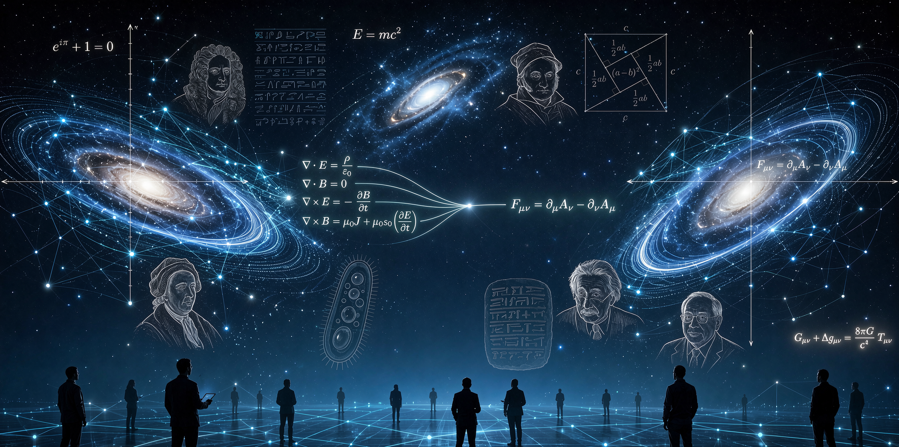

FORN Lab
关系型网络基础原理实验室
以共识为出发点
从基本粒子间的相互作用
到人与人之间的社会关系
Foundation of Relational Networks Laboratory

About the Lab
FORN Lab 介绍
FORN Lab（Foundation of Relational Networks Laboratory，关系型网络基础原理实验室）由宋词创立。由宋词发起创立。此前，通过「在田文艺传播工作室」在跨领域内容生产与关系网络实践层面的长期探索，为这间实验室的正式创建完成了前期积累，奠定了方法论与实践经验的双重基础。
FORN Lab 是一项面向底层逻辑的跨学科长期研究计划。实验室以共识为核心出发点，致力于搭建一条连贯自洽的理论脉络：向下深入基本粒子间相互作用的底层物理理论，向上延伸至人类个体与群体之间社会关系的结构社会学理论——并在这个贯穿微观到宏观的完整链条中，重新锚定数学、计算与哲学在整个体系中扮演的基础性支撑角色。
从量子尺度的物理世界到复杂涌现的人类社会，我们始终相信：宇宙的可理解性与社会的可共识性，并非两个完全独立的命题，二者或许共享着同一种深层生成结构。
宋词主页→
Current Works